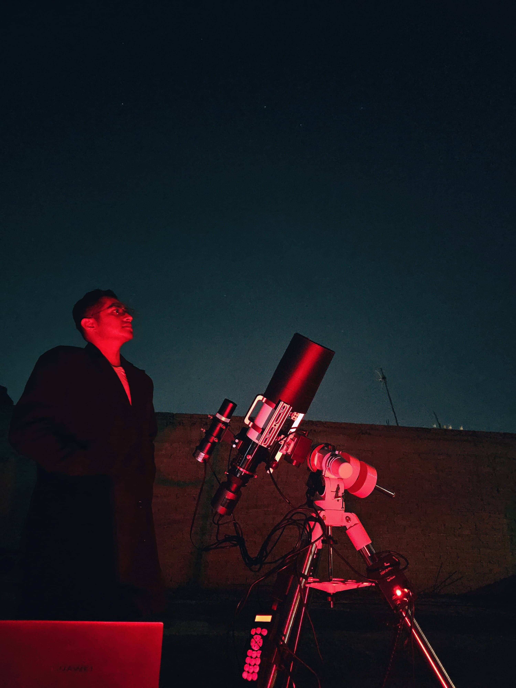

AstroDeepCoffe by Eduardo MG
Capturando el Cosmos

Sobre Mí
¡Hola! Soy Eduardo, un apasionado de la astronomía y la fotografía. Desde que era niño, el cielo nocturno me ha fascinado, y este sitio es el resultado de incontables horas bajo las estrellas, intentando capturar una pequeña fracción de su inmensa belleza. ¡Espero que disfrutes del viaje!
Mi Equipo

Telescopio Principal
Askar FRA 400

Telescopio Secundario
Newton Celestron 130SLT
Cámara Principal
SVBONY 405c

Montura
Sky-Watcher EQM35 PRO